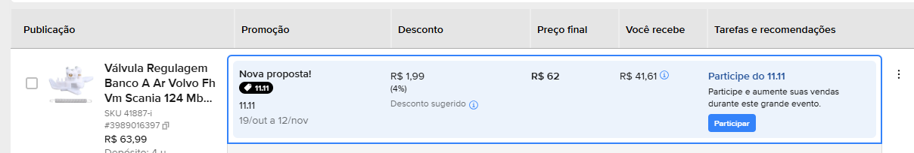
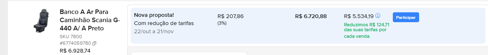

Astra
Plano de Marketing · Novembro 2026Proposta para a equipe · Astra · Novembro 2026
Plano
de novembro
& Black Friday.
de novembro
& Black Friday.
Data-chave
Black Friday 27/11
Cyber Monday 30/11
Foco de conteúdo
Tratores e agro
Maior busca sem resposta nossa
Canais
Loja · Mercado Livre · Redes · E-mail
Mesmo calendário para todos
01 / 19Outubro · 2026
Astra · Plano de Marketing
Novembro 2026Panorama do mês
Novembro: Black Friday,
agro e cadeiras.
agro e cadeiras.
É o mês mais movimentado do digital. A Black Friday puxa o mês inteiro, e ao lado dela seguem os ajustes do agro e das cadeiras.
01 · Black Friday
Semana de 23 a 30/11
Loja e Mercado Livre. Bancos com condição de pagamento, peças com desconto. Mercado projeta R$ 13,3 bi no e-commerce de 26 a 29/11 (+20,7%).
02 · À parte da Black
Agro e cadeiras
Linha agrícola do catálogo subindo para o site e cadeiras com nova estratégia de SEO e anúncios refeitos no ML.
03 · Comunicação
Canal a canal
10 posts, 7 newsletters, 4 artigos e 4 páginas otimizadas, tudo num calendário só.
Projeção: Confi Neotrust via Giro News (14/10/2026).
Astra · Plano de Marketing02 / 19
Astra · Plano de Marketing
Novembro 2026Pesquisa de mercado
A Black Friday virou
uma semana, não um dia.
uma semana, não um dia.
Em 2025 a quinta vendeu mais que a sexta. O consumidor pesquisa semanas antes, compara preço e desconfia de desconto.
E-commerce na sexta 2025
4,76 bi
+11,2% sobre 2024
8,7 milhões de pedidos
8,7 milhões de pedidos
Quinta a domingo 2025
10,2 bi
a quinta cresceu 34%
e passou a sexta
e passou a sexta
Projeção 2026
13,3 bi
de 26 a 29/11
+20,7%
+20,7%
Planejam antes
81%
dos compradores
metade pesquisa 30 dias antes
metade pesquisa 30 dias antes
Desconfiança
84% conferem se o desconto é real e 46% escolhem a loja pela reputação. O Procon-SP orienta dar o desconto sobre o menor preço dos últimos 60 dias. Subir antes para baixar depois é propaganda enganosa (CDC, art. 37).
Frete e pagamento
48% desistem da compra se o frete é caro. O Pix chegou a 38% dos pagamentos na BF 2025 (+15 pontos) e 77% de quem paga no cartão parcela, quase todos em até 6 vezes.
Fontes: Confi Neotrust via Exame (30/11/2025) e Giro News (02/12/2025 e 14/10/2026); pesquisa Mercado Livre com 42 mil usuários (out/2025); Gauge/W3haus via Meio & Mensagem (set/2025); Google/Offerwise (nov/2025); Toluna (nov/2025); LWSA via Mercado & Consumo (out/2025); Procon-SP (nov/2025).
Astra · Plano de Marketing04 / 19
Astra · Plano de Marketing
Novembro 2026Pesquisa de mercado
O que funciona
na Black Friday.
na Black Friday.
O que os dados de 2025 mostram e como isso vira decisão para a Astra.
| Prática | O dado | Como a Astra aplica |
|---|---|---|
| Preço de referência limpo | 84% conferem se o desconto é real. Procon-SP: desconto sobre o menor preço dos últimos 60 dias. | Não mexer em preço de loja e ML até a BF e guardar o registro dos preços de hoje. |
| Mecânica por ticket | Desconto leve (10 a 25%) converteu melhor e as marcas com desconto menor cresceram mais (Klaviyo 2025). | Peças: 10 a 25%. Bancos: parcelamento longo sem juros e desconto no Pix, sem corte fundo na margem. |
| Pagamento | Pix em 38% dos pagamentos (+15 pontos). 77% de quem usa cartão parcela (LWSA, ML). | Desconto à vista no Pix. Parcelamento sem juros, que o ML já pede em 186 anúncios nossos. |
| Frete | 48% desistem com frete caro. 41% decidem pelo custo do frete (LWSA, Google). | Hoje a loja não tem frete grátis. Decidir se ele entra na condição da semana, por exemplo nos bancos, ou se o argumento fica no pagamento. |
| B2B com regra clara | 85% dos vendedores B2B planejavam participar. Só metade dos compradores confia no preço promocional (DHL 2025). | Kits e condição por volume para frotista e oficina, com as regras escritas na página. |
| Agro pouco disputado | Estudo Macfor: o agro “desperdiça” a BF, sem promoções claras para o produtor. | Vitrine agro própria (9515, 6005, B0001, compressores) numa data com pouca concorrência. |
| Reputação na entrega | Entrega é 25% das reclamações da BF no Reclame Aqui. 46% escolhem a loja pela reputação. | Só ofertar com estoque e prazo de fábrica confirmados. Resposta rápida no ML e no WhatsApp. |
Fontes: Klaviyo BFCM 2025; LWSA via Mercado & Consumo (28/10/2025); Google/Offerwise (nov/2025); DHL eCommerce Trends 2025; Macfor via Canal Rural (nov/2025); Reclame Aqui via Poder360 (nov/2025); Toluna (nov/2025); Procon-SP (11/11/2025).
Astra · Plano de Marketing05 / 19
Astra · Plano de Marketing
Novembro 2026Black Friday · produtos
Peça sai todo dia.
Banco faz o faturamento.
Banco faz o faturamento.
Vendas de julho a 21 de outubro, loja e Mercado Livre juntos.
Peças vendidas
322
em 170 pedidos
Dias com venda de peça
79
de 113 dias: 7 em cada 10
Bancos vendidos
26
R$ 159 mil em receita
Peça campeã
96
válvulas de regulagem, quase todas no ML
Peças mais vendidas
| Peça | Vendidas | Visitas ML 30d |
|---|---|---|
 Válvula de regulagem do banco a ar (41887-I) Válvula de regulagem do banco a ar (41887-I) | 96 | 328 |
 Trava de aço da mangueira de ar (G44714) Trava de aço da mangueira de ar (G44714) | 30 | 28 |
 Guia trava ISRI (35225) Guia trava ISRI (35225) | 27 | 50 |
 Tecla regulagem encosto Scania S4 (2526303) Tecla regulagem encosto Scania S4 (2526303) | 20 | 13 |
 Válvula morcego ISRI (41887) Válvula morcego ISRI (41887) | 16 | 10 |
 Tecla encosto Scania S5 (31735) Tecla encosto Scania S5 (31735) | 16 | 22 |
 Tecla lateral encosto Volvo NTS (31740) Tecla lateral encosto Volvo NTS (31740) | 14 | 62 |
Bancos que mais faturaram
| Banco | Vendidos | Receita | Visitas site · ML |
|---|---|---|---|
 Giratório JCB 3CX (5010) Giratório JCB 3CX (5010) | 8 | R$ 53,1 mil | 680 · 1.486 |
 A ar universal caminhão (7800) A ar universal caminhão (7800) | 7 | R$ 49,4 mil | 3.607 · 66 |
 Eletropneumático trator (9515) Eletropneumático trator (9515) | 3 | R$ 28,1 mil | 2.582 · 29 |
 Hidráulico trator (6005) Hidráulico trator (6005) | 2 | R$ 10,8 mil | 215 · 48 |
 Grammer trator (saldão) (B0001) Grammer trator (saldão) (B0001) | 3 | R$ 9,0 mil | menos de 100 · 172 |
 Kit 2 bancos empilhadeira (2012) Kit 2 bancos empilhadeira (2012) | 2 | R$ 6,3 mil | 100 · sem dado |
Astra · Plano de Marketing06 / 19
Astra · Plano de Marketing
Novembro 2026O que já deu certo
Saldão de bancos: 11 de 16
vendidos em 4 semanas.
vendidos em 4 semanas.
Bancos parados na fábrica, colocados à venda em 25/09 com preço de saldão e divulgação em todos os canais.
Vendidos


Os 6 modelos de unidade única saíram nas duas primeiras semanas, e 5 dos 8 Grammer de trator também já foram.
Ainda no estoque


Grammer de trator: 3 unidades.
Passageiro de ônibus: 2.
Passageiro de ônibus: 2.
O que fez vender
Desconto real de 30 a 40% sobre o preço que já praticávamos, foto do banco de verdade e aviso de peça única. Divulgação em tudo ao mesmo tempo: coleção e banner no site, Mercado Livre, newsletter e arte no WhatsApp dos vendedores, que fecharam várias vendas direto.
Onde travou
Os 2 bancos de passageiro de ônibus. A capa é específica, então só serve para quem tem exatamente aquele acabamento. Banco universal saiu rápido; banco de nicho, não.
Para a equipe avaliar
A fábrica ainda tem outros bancos parados em estoque. Com o mesmo formato, eles caberiam na Semana Black Friday?
Astra · Plano de Marketing07 / 19
Astra · Plano de Marketing
Novembro 2026Black Friday · Mercado Livre
O Mercado Livre já está
oferecendo vitrine.
oferecendo vitrine.
Duas propostas que apareceram na nossa conta esta semana. Desconto pequeno, exposição grande.

11.11 · válvula 41887
R$ 1,99
de desconto (4%) para entrar no 11.11, de 19/10 a 12/11. Em 2025 o 11.11 foi o maior dia de vendas da história do ML. A peça mais vendida da casa entra na vitrine do evento quase sem mexer no preço.

Redução de tarifa · banco 7800
R$ 83
é o custo real por venda. O desconto é de R$ 207,86 (3%), mas o ML devolve R$ 124,71 de tarifa em cada venda, de 22/10 a 21/11. O banco mais vendido ganha destaque pagando pouco.
Atenção: preço de campanha entra na conta do menor preço dos últimos 60 dias (Procon-SP), que vale como referência para o desconto da Black Friday.
Astra · Plano de Marketing08 / 19
Astra · Plano de Marketing
Novembro 2026A proposta
Semana Black Friday Astra,
de 23 a 30/11.
de 23 a 30/11.
Condição geral
Em todos os produtos,
na loja e no Mercado Livre
na loja e no Mercado Livre
10x
sem juros
5%
de desconto no Pix
Peças de giro
10% a 25%
de desconto
●Válvula 41887, guia trava 35225, teclas Scania
●Kits com preço melhor que avulso
Saldão de bancos
Estoque
parado da fábrica
●Mesmo formato do saldão de setembro
●Grammer B0001: últimas unidades
Mercado Livre
Campanhas
do próprio ML
●Anúncio Premium nos bancos, para ter o parcelamento
●11.11 e redução de tarifa nas peças e no 7800
Regras: aviso a partir de 17/11, força maior na quinta 26 e na sexta 27 · preço base não sobe até a Black Friday (desconto sobre o menor preço dos últimos 60 dias, Procon-SP) · só entra produto com estoque e prazo de fábrica confirmados.
Astra · Plano de Marketing09 / 19
Astra · Plano de Marketing
Novembro 2026Peças de comunicação
O que precisa
ser produzido.
ser produzido.
Tudo pronto até 20/11. A semana de 23/11 é só para publicar e responder cliente.
| Peça | Conteúdo | Onde | Pronto até |
|---|---|---|---|
| Post feed 4:5 · 4 artes | Aviso, vitrine (carrossel), dia da BF e Cyber Monday | Instagram e Facebook | 13/11 |
| Stories 9:16 · 6 artes | Figurinha de contagem regressiva (avisa o seguidor) e produto do dia, de 23 a 30/11 | 13/11 | |
| Banner home · 2 versões | Desktop e celular, com link para a coleção | Loja | 18/11 |
| Selo de oferta | Aplicado na 1ª foto dos produtos da vitrine | Loja e ML | 18/11 |
| Banner loja oficial ML · 2 | Desktop e celular, padrão dos banners de outubro | Mercado Livre | 18/11 |
| 5 e-mails | Aviso 17/11, abertura 24/11, quinta 26/11, dia 27/11, último dia 30/11 | RD Station | 16/11 |
| Capa da coleção + textos | Título, descrição e SEO da coleção Semana Black Friday | Loja | 18/11 |
| Vídeo curto do 5010 e do 7800 | Reaproveitar o vídeo do 5010 e gravar o 7800 | Reels, ML e loja | 20/11 |
Astra · Plano de Marketing10 / 19
Astra · Plano de Marketing
Novembro 2026Nova frente · linha agrícola
Linha agrícola: 22 bancos
mapeados, código por código.
mapeados, código por código.
Levantamento de 20/10, código por código, contra a loja. Mesmo trabalho que fizemos com os bancos de caminhão.
Prontos no site
5
6005, 9515, 5010, 5011
e S2005
e S2005
No site, sob consulta
8
ganham preço
na rodada 1
na rodada 1
A cadastrar
9
GA4447, GA6000, GA3020,
S7806, 9507 e outros
S7806, 9507 e outros
Catálogo agro
217
códigos no total,
39 já na loja
39 já na loja
Primeiro passo
Os bancos Caterpillar 9005-CAT e 9501-CAT, que já vendem no Mercado Livre a R$ 14.887 e R$ 16.389, ganham preço também no site.
Rodada 1 · bancos
03 a 13/11. Os 8 bancos sob consulta ganham preço, segmento principal (trator, pá carregadeira, retroescavadeira) e mais fotos.
Rodada 2 · ampliação
Os 9 bancos que ainda não estão no site entram conforme a fábrica envia foto, preço e aplicação. Na sequência, as peças agrícolas.
Astra · Plano de Marketing12 / 19
Astra · Plano de Marketing
Novembro 2026À parte da Black · cadeiras
Cadeiras: nova estratégia
no site e no Mercado Livre.
no site e no Mercado Livre.
A página Cadeiras Operacionais já é a segunda mais vista do site no Google. A ideia é levar esse alcance para cada cadeira.

Navigator 4002
Salas de controle e offshore
R$ 5.200

Aço 4037
Portarias e aciarias
R$ 4.100

Confort 4020
Escritórios e portarias
R$ 3.850
Site
A página Cadeiras Operacionais vira o centro: texto por uso, comparativo das 3 cadeiras e perguntas frequentes, com link para cada uma.
Produtos
Título com o que o cliente busca na frente, como Cadeira Operacional 24 Horas para Sala de Controle.
Mercado Livre
Títulos com as buscas do ML, parcelamento sem juros e vídeo nos três anúncios.
Site na semana de 09/11 e Mercado Livre na semana de 16/11, no fluxo de sempre: concorrentes, proposta e aprovação.
Astra · Plano de Marketing13 / 19
Astra · Plano de Marketing
Novembro 2026Calendário
Novembro, dia a dia.
Redes sociaisNewsletterArtigo e página SEOLoja e MLBlack FridayFeriado
Segunda
Terça
Quarta
Quinta
Sexta
02
Finados
03
News: banco de trator
04
Post: ilustração agro
Artigo + SEO: trator
05
Agro: catálogo rodada 1
06
Post: sinais da válvula
09
Post: 30 anos de Astra
10
News: peças sem trocar o banco
11
ML 11.11: peças em oferta
Post: 5010 JCB 3CX
Artigo + SEO: empilhadeira
12
Cadeiras: páginas da loja
13
Artes BF prontas
16
Post: avaliações de clientes
17
News: aviso Black Friday
18
Post: Grammer para trator
Artigo: Massey · SEO: amortecedor
19
ML e loja: ofertas cadastradas
Cadeiras: anúncios ML
20
Consciência Negra
23
Abre a semana BF
Post: começou
24
News: ofertas no ar
25
Post: vitrine (carrossel)
Artigo + SEO: válvula
26
News: quinta forte
Stories: contagem regressiva
27
BLACK FRIDAY
Post + stories
News: é hoje
30
Cyber Monday
Post: último dia
News: último dia
Sábados e domingos: só stories na semana da Black Friday. Posts saem entre 8h e 10h. Antes de novembro: semana de produção de 26 a 30/10.
Astra · Plano de Marketing15 / 19
Astra · Plano de Marketing
Novembro 2026Redes sociais
10 posts, 2 por semana
e 4 na semana da BF.
e 4 na semana da BF.
Instagram e Facebook em todos. LinkedIn nos institucionais e de prova social. Sem enxurrada de emoji e sem humor forçado.
| Dia | Tipo | Post | Status |
|---|---|---|---|
| Qua 04/11 | Agro | Ilustração da marca: na safra, o trator não para. Quem está no banco também não | Em produção |
| Sex 06/11 | Dica | 4 sinais de que a válvula do banco a ar precisa de troca (a peça que mais vende) | Produzir |
| Seg 09/11 | Institucional | 30 anos de Astra: de 1996, distribuidora ISRINGHAUSEN e GRAMMER, até hoje | Produzir |
| Qua 11/11 | Produto | Banco 5010 para retroescavadeira JCB 3CX: giratório 360° | Artes prontas |
| Seg 16/11 | Prova social | Avaliações reais de clientes no Google | Produzir |
| Qua 18/11 | Produto agro | Banco Grammer para trator John Deere, Massey, Valtra e New Holland | Produzir |
| Seg 23/11 | Black Friday | Começou a Semana Black Friday Astra | Produzir |
| Qua 25/11 | Black Friday | Vitrine em carrossel: bancos e peças da semana | Produzir |
| Sex 27/11 | Black Friday | É hoje + stories ao longo do dia | Produzir |
| Seg 30/11 | Black Friday | Cyber Monday: último dia | Produzir |
Astra · Plano de Marketing16 / 19
Astra · Plano de Marketing
Novembro 2026Newsletters · RD Station
7 envios, com a
sequência da Black Friday.
sequência da Black Friday.
Aviso, abertura, quinta, sexta e último dia. O maior volume de e-mail do mercado sai na semana anterior à BF, e a medida é clique e pedido, não abertura (média de 13% na BF 2025, Sinch/Mailjet).
| Envio | Base | Assunto do e-mail | Objetivo |
|---|---|---|---|
| Ter 03/11 | Agro | Como escolher o banco do trator | Leva para o artigo novo e a coleção de trator |
| Ter 10/11 | Caminhões | Peças que resolvem sem trocar o banco | Válvula, guia trava e teclas: o que mais vende |
| Ter 17/11 | Toda a base | Aviso: Semana Black Friday Astra | Data, o que vai entrar e onde acompanhar |
| Ter 24/11 | Toda a base | As ofertas estão no ar | Bancos e peças da vitrine, link direto da coleção |
| Qui 26/11 | Quem abriu dia 24 | As condições já estão valendo | Em 2025 a quinta vendeu mais que a sexta |
| Sex 27/11 | Quem abriu dia 24 | É hoje | Lembrete curto com os 3 produtos mais clicados |
| Seg 30/11 | Quem clicou e não comprou | Último dia | Fecha a semana |
Medir de verdade
O e-mail trouxe só 52 sessões ao site em 90 dias pelo Analytics. Todos os links de novembro saem com UTM para sabermos o que cada envio gera em visita e venda.
Astra · Plano de Marketing17 / 19
Astra · Plano de Marketing
Novembro 2026Blog e busca orgânica
4 artigos e 4 páginas,
uma de cada por quarta.
uma de cada por quarta.
Pauta escolhida pelo que já aparece no Google perto do topo e pelo volume de busca. Subir da posição 8 para a 3 costuma multiplicar os cliques.
Artigos novos
| Dia | Artigo | Por que esse |
|---|---|---|
| Qua 04/11 | Banco para trator: como escolher | 480 + 320 buscas/mês, dificuldade 5. Nenhum artigo nosso de trator |
| Qua 11/11 | Banco para empilhadeira: modelos e quando trocar | Página de empilhadeira tem 700 aparições/mês, mas na posição 7 a 8 |
| Qua 18/11 | Banco para trator Massey Ferguson | 170 buscas/mês, dificuldade 7 |
| Qua 25/11 | Válvula do banco a ar: tipos e defeitos | Peça que mais vende. “Válvula morcego” na posição 5 a 7 |
Páginas a otimizar
| Dia | Página | Dado de hoje (Search Console, 28 dias) |
|---|---|---|
| Qua 04/11 | Coleção Banco para Trator | 4 aparições/mês na posição 12. Meta: entrar na 1ª página |
| Qua 11/11 | Página Bancos para Empilhadeiras | ≈700 aparições/mês na posição 7 a 8. Meta: top 3 |
| Qua 18/11 | Coleção de amortecedores | ≈250 aparições/mês na posição 7 a 8 |
| Qua 25/11 | Produto válvula morcego 41887 | ≈200 aparições/mês na posição 5 a 7 |
Astra · Plano de Marketing18 / 19
Astra · Plano de Marketing
Novembro 2026Para decidir hoje
O que precisa
da equipe.
da equipe.
Com essas quatro respostas, o plano entra no painel como guia do mês.
01Mecânica, margem e frete
Quanto de desconto no Pix e em quantas vezes sem juros nos bancos? Qual faixa nas peças, dentro dos 10 a 25%? O frete entra na condição da semana ou não?
02Produtos e saldão
Validar os produtos da vitrine com margem e prazo de fábrica. Os bancos parados no estoque entram como um saldão de Black Friday?
03Promoções do Mercado Livre
Entrar nas campanhas do próprio ML (parte do desconto pode ser coberta pelo ML) e em quais anúncios.
04Responsáveis e prazos
Quem produz as artes, quem monta a loja e o ML, quem responde cliente na semana.
Astra · Plano de Marketing19 / 19